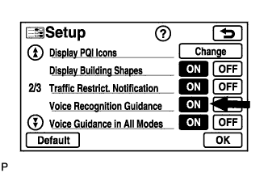
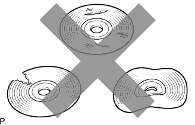
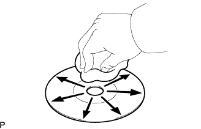
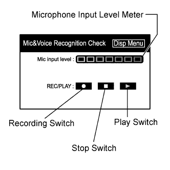

NAVIGATION SYSTEM > Voice is not Recognized |
| 1.CHECK NAVIGATION SETTINGS |
 |
Enter the "Menu" screen by pressing the "MENU" switch.
Select "Set up".
 |
Check that "Voice Recognition Guidance" is not OFF.
|
| ||||
| OK | |
| 2.CHECK MAP DISC |
 |
Check that the map disc is not deformed or cracked.
|
| ||||
| OK | |
| 3.CHECK MAP DISC |
 |
Check for dirt on the map disc surface.
|
| ||||
| OK | |
| 4.CHECK MICROPHONE (NAVIGATION CHECK MODE) |
 |
Enter the "Mic & Voice Recognition Check" mode (Click here).
When a voice is input into the microphone, check that the microphone input level meter changes according to the input voice.
Push the recording switch and perform voice recording.
Check that the recording indicator remains on while recording and that the recorded voice is played normally without noise or distortion.
|
| ||||
| OK | ||
| ||